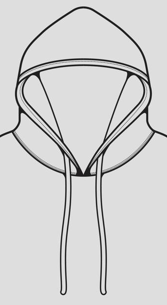
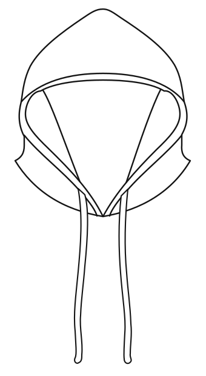
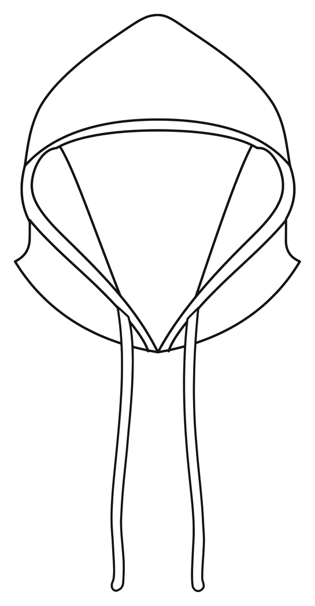
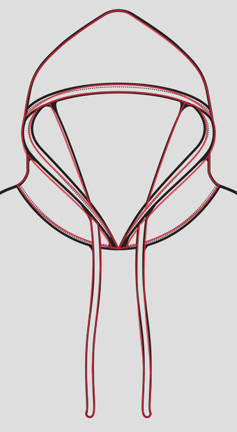

New Reference

1. Isolated Hood SVG

2. Clean Technical Version


Source Overlay

Red: recreated lines. Gray and black: supplied reference.
New primary reference. Hood and drawstrings only. Shape approval pending.
No neckline registration, fit assignment, installation, or publishing.




Red: recreated lines. Gray and black: supplied reference.